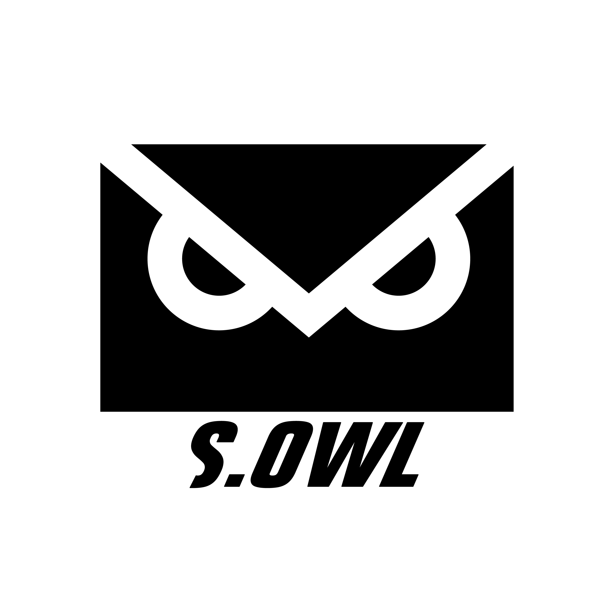

<div align="center">
  <section class="home-header">
    
  <p><span class="typed"></span><span class="typed-cursor"></span><br /> 성공회대학교 소프트웨어 연구개발 소모임</p>
    <a href="{{ "/about/" | prepend: site.baseurl }}">
    <button type="button" class="btn btn-lg btn-default">S.OWL에 대해 알아보기</button>
  </a>
  </section>
  <div class="home-content">
  <h2>News</h2>
  <ul class="post-list">
    {% for post in site.posts limit:5 %}
      <li>
        <h2>
          <a class="post-link" href="{{ post.url | prepend: site.baseurl }}">{{ post.title }}</a>
        </h2>
        <span class="post-meta">{{ post.date | date: "%Y.%m.%d" }}{% if post.author %} | {{ post.author }} {% endif %}</span>
      </li>
    {% endfor %}
  </ul>
  </div>
</div>
{% include custom_typed.html %}
